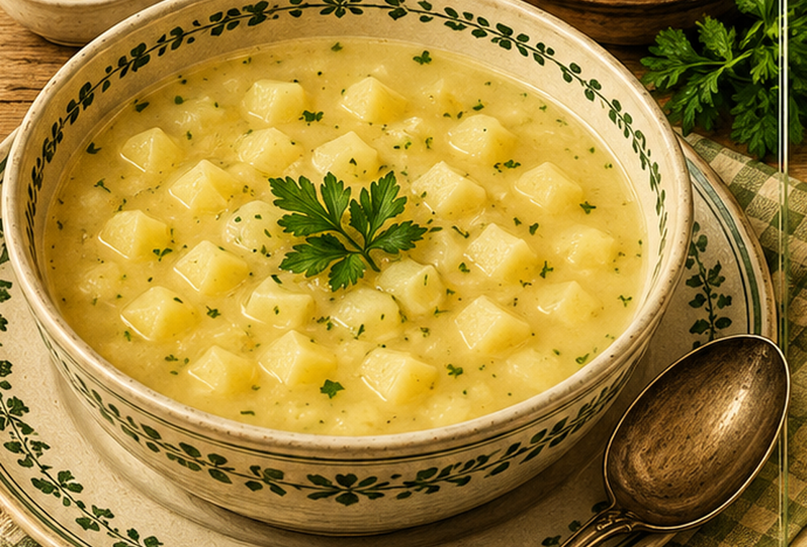

Kartoffelsuppe von gekochten Kartoffeln
Eine einfache Kartoffelsuppe aus bereits gekochten Kartoffeln und einer hellen Mehlschwitze.

Originale Überlieferung
Gekochte Kartoffeln werden geschält, gewürfelt und in das Kartoffelwasser gegeben. Dazu kommt eine Mehlschwitze. Mit Salz wird abgeschmeckt, etwas Butter zugegeben und die Suppe noch einmal aufgekocht.
Moderne Übertragung
Gekochte Kartoffeln werden in ihrem Kochwasser erwärmt. Eine helle Mehlschwitze bindet die Suppe; Butter rundet sie ab.
Zutaten
- 1 kg gekochte Kartoffeln
- etwa 1,5 l Kartoffelkochwasser oder Wasser
- 1 EL Mehl
- 1 EL Butter, plus etwas zum Abschmecken
- Salz
- nach Wunsch Petersilie
Zubereitung
- Kartoffeln schälen und würfeln.
- Kartoffeln im Kochwasser erhitzen.
- Aus Butter und Mehl eine helle Mehlschwitze bereiten.
- Mit etwas Suppenwasser glatt rühren und in die Kartoffelsuppe geben.
- Aufkochen, salzen und mit etwas Butter und Petersilie vollenden.